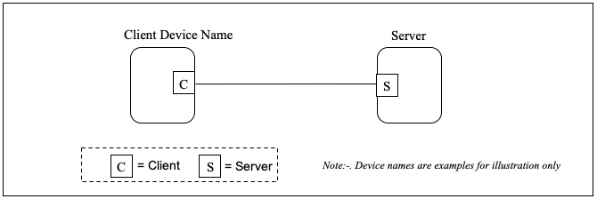

License, Copyright, and Trademark
The content contained in this repository is the intellectual property of Snap One, LLC, (formerly known as Wirepath Home Systems, LLC), and use without a valid license from Snap One is strictly prohibited. The user of this repository shall keep all content contained herein confidential and shall protect this content in whole or in part from disclosure to any and all third parties except as specifically authorized in writing by Snap One.
License and Intellectual Property Disclaimer
The content in this repository is provided in connection with Snap One products. No license, express or implied, by estoppal or otherwise, to any intellectual property rights is granted by this document or in this repository. Except as provided in Snap Oneʼs terms and conditions for the license of such products, Snap One and its affiliates assume no liability whatsoever and disclaim any express or implied warranty, relating to the sale and/or use of Snap One products including liability or warranties relating to fitness for a particular purpose, merchantability, or infringement of any patent, copyright or other intellectual property right. Snap One products are not intended for use in medical, lifesaving, or life sustaining applications.
Information regarding third-party products is provided solely for educational purposes. Snap One is not responsible for the performance or support of third-party products and does not make any representations or warranties whatsoever regarding the quality, reliability, functionality or compatibility of these products. The reader is advised that third parties can have intellectual property rights that can be relevant to this repository and the technologies discussed herein, and is advised to seek the advice of competent legal counsel regarding the intellectual property rights of third parties, without obligation of Snap One.
Snap One retains the right to make changes to this repository or related product specifications and descriptions in this repository, at any time, without notice. Snap One makes no warranty for the use of this repository and assumes no responsibility for any errors that can appear in the repository nor does it make a commitment to update the content contained herein.
Copyright
Copyright 2022 Snap One, LLC. All rights reserved.
The above copyright notice applies to all content in this repository unless otherwise stated explicitly herein that a third-party’s copyright applies.
No part of this publication may be reproduced, photocopied, stored on a retrieval system, or transmitted without the express written consent of the publisher.
Trademarks
Snap One and Snap One Logo, Control4 and the Control4 logo, and DriverWorks are trademarks or registered trademarks of Snap One, LLC. Other product and company names mentioned in this repository may be the trademarks or registered trademarks of their respective owners.
Derivative Works
To the extent that you create any “Derivative Work” (meaning any work that is based upon one or more preexisting versions of the work provided to you in this repository, such as an enhancement or modification, revision, translation, abridgement, condensation, expansion, collection, compilation or any other form in which such preexisting works may be recast, modified, transformed or adapted, explicitly including without limitation, any updates or changes to Snap One, LLC’s software code or intellectual property) such Derivative Work shall be owned by Snap One, LLC and all right, title and interest in and to each such Derivative Work shall automatically vest in Snap One, LLC. To the extent any Derivative Work does not automatically vest in Snap One, LLC by operation of law, you hereby assign such Derivative Work to Snap One, LLC with full title guarantee. Snap One, LLC shall have no obligation to grant you any right in any such Derivative Work.
Contact Us
Snap One, LLC 11734 S. Election Road Salt Lake City, UT 84020 USA
Control4 Zigbee Certification
Overview
This content is to be used as a guide for the implementation and certification of the Control4 Networking Cluster on an OEM product so that it can interoperate with a Control4 System Controller.
The content provides certification test details of behavior of ZigBee devices that implement the Control4 Large Network Cluster. During development, a Control4 controller with ZigBee capability can be utilized to test many of these functions using the ‘zman’command line interface present on the controller. This application allows direct control over the ZigBee server running on that controller. A ZigBee sniffer is required as well as a method of measuring radio performance, such as error vector magnitude (EVM) and receive sensitivity.
Preliminary Setup:
- ssh to the controller at: root@<controller ip> password: t0talc0ntr0l4!
- Type: sysman disable director
- Type: sysman enable zap
- Type: sysman enable zserver
- Type: zman
The process of certifying a device with Control4 is to send two units running validation firmware to Control4 for certification testing, as well as providing instructions on how to enter a FCC or manufacturing test mode for streaming. Optionally, an additional unit may be sent with manufacturing test firmware for this purpose.
The following areas of functionality will be tested based upon device type:
End-Device (polling and non-polling)
- Implements Control4 or equivalent joining algorithm to ensure reliable joining behavior in the presence of more than one PAN.
- Support for ZDO leave request.
- Support for ZDO channel change request.
- Uses secure rejoin only - Device does not expose the mesh network keys during rejoin behavior
- Adheres to end-device announcement behavior.
- Implements Control4 lost node behavior equivalent. Adheres to clustering behavior when changing channels, and performs access point queries when acquiring correct channel to avoid clustering on incorrect channels.
- Implements HA standard polling and fast polling intervals.
- Implements access point requests to parent router to determine best access point.
- Implemented on a tested baseline "compatible" stack version and vendor.
- Implemented with a General Availability (GA) stack release.
- Uses Control4 compatible stack configuration and SAS attribute set.
- Error Vector Magnitude less than 15%.
Router
In addition to the above, router implementations also require the following:
- Support for Distributed Trust Center mode.
- Support for adjustable MTORR period and adjustable Announce Window.
- Adheres to announcement jitter and back-off behavior.
- Uses Control4 stack configurations for maximum hops, stack profile, security level, end-device poll timeout shift, end-device child count that is compatible with Control4 configuration.
- Implements required SSCP as per our router specification. This includes end-device access point information.
- Implements access point tracking algorithm for 3 or more access points.
- Implements access point requests from a child end device.
Details
Implements Control4 or equivalent joining algorithm
802.15.4 provides a very basic mechanism for discovering and joining a network. The method is to send a single one-hop 802.15.4 message called a beacon request, requesting that all neighboring nodes within one hop send a beacon response. This response indicates if they are in permit joining mode. The requesting device stack implementation can only process a subset of these responses. In the presence of many responses, some will be lost. After receiving beacon responses, the requester then must prioritize responses and select a PAN to join. The goal is to obtain a list of all PAN's with nodes allowing joining, and then successfully to join the "best" one. This criteria for selection of a PAN is up to the implementer.
Control4 recommends the following joining algorithm to ensure reliable joining. Since this is application code, this will be vendor specific and may vary from this recommended implementation:
- Set a random channel.
- Send out a beacon request.
- Handle incoming beacons responses for the ZigBee-Pro specified active scan duration of 3, or 138 milliseconds (note that nodes must match the node they are joining, meaning Zserver, parent routers, and all end devices must use the same scan duration). Store up to 16 PAN candidates, each being stored if all of the following criteria are true:
- Beacon response has the "permit joining" flag set to true.
- The stack profile matches the ZigBee-Pro stack profile (2 for secure ZigBee-Pro devices, 0 for non-secure).
- The pan is unique, and has not already been stored.
- If joinable PAN(s) found, and if multiple PANs are found, attempt to join the PAN with the best (highest) LQI (or equivalent metric) during the beacon scan process. Otherwise attempt to join the single PAN found.
- If joinable PAN(s) not found, perform steps 2-5 on the next channel. Continue until all channels are attempted.
- If a join is attempted and fails for the following reasons: mac transmit failure or no beacon responses, then repeat steps 1-5.
- In case of join failures, retry steps 1-6 up to 5 times.
Notes: Silicon Labs stacks have included a simplified version of the above algorithm for some time. The included method of joining was found deficient in a number of areas. Silicon Labs has noted that the joining code provided as part of a GA stack release is for demonstration purposes, and vendors are recommended to implement their own method to harden the implementation. Some areas where the Silicon Labs joining code exhibited problems when: joining in presence of multiple PANs, joining first pan on lowest channel, not handling scan error status or retries. In the case of Silicon Labs EM357, there was a defect in some stack variants wherein the code relied on byte alignment for a memory copy of duplicate PAN information. This caused a situation where PAN information was being overwritten on EM357 platforms in the presence of more than one PAN. It is expected there is a limitation on number of discoverable PANs. The device should support at least 16 PAN’s not permitting joining. If there are more than 16 PAN's not permitting joining, PANs that are permitting joining may not be discovered within all retry attempts. The PAN limit is often determined by free RAM and the size of message buffers provided by the stack, and is therefore vendor specific. This can be an issue in hospitality and MDU environments. It can also be a problem in dense QA, engineering development, or manufacturing environments, where many PANs are present in a condensed area. For this reason, it may also be useful to provide code to join a specific PAN.
Support for ZDO leave request
Device should leave the network when sent a ZDO leave request.
Validation:
- Add the device to a mesh.
- Send a ping request to confirm the device is communicating on the mesh.
- Send a ZDO leave using zman→leave.
- Send a ping request to confirm the device is not responding to ping.
- Confirm with a sniffer the device is no longer sending messages on the mesh (link status exchange or ping ack/response).
Support for ZDO channel change request
Device should change channels upon reception of a ZDO channel change request.
Validation:
- Add the device to a mesh.
- Send a ping request to confirm the device is communicating on the mesh and correct channel.
- Confirm with a sniffer the device is on the expected channel.
- Send a ZDO channel change using zman→channel.
- Change the sniffer channel to the new channel.
- Wait for 10 seconds.
- Send a ping request to confirm the device is still responding to ping on the new channel.
- Confirm with a sniffer the device is sending messages on the correct channel.
Uses secure rejoin only
When certain failures occur, the prescribed method of resolving communications problems is for a ZigBee device to rejoin the network. ZigBee-Pro devices can implement two different methods of rejoining network, secure and un-secure. The method for un-secure rejoin is to attempt to rejoin securely using the current network key, and if this fails, fallback to obtaining a network key using the pre-configured link key. This is the HA standard method of rejoining, where the network key may have changed. Since the preconfigured link key ("ZigBeeAlliance09") is well known, this makes it very easy to setup a sniffer and watch for the network key exchange for a device rejoining un-securely. This only applies to centralized trust center mode, however. Control4 uses distributed trust center mode, where each device can allow another device to negotiate a network key while joining. Since there is no reliable method of distributing a network key change in distributed trust center, and since the un-secure method exposes the network key over the air, Control4 strictly disallows this method of rejoining. The primary area of concern is that a parent router does not allow an un-secure device to obtain the network key using the preconfigured link key. This is a policy decision for a router firmware application when running in centralized or distributed trust center mode. The secondary concern is that the device does not attempt to rejoin using an unsecured rejoin. This would create a situation where the network key could be captured by forcing nodes within an installation into a rejoining mode.
Validation:
- Join a device that performs unsecured rejoin to a routing device under test.
- Confirm that the routing device under test does not respond to un-secure rejoin requests.
- Trigger the device under test to rejoin the network (e.g. generate route failures).
- Ensure the device under test does not perform an unsecured rejoin using the preconfigured link key "ZigBeeAlliance09".
Test Case 1: Join DUT to the network. Generate noise in network such that DUT attempts to rejoin the network, make sure DUT never attempts unsecure rejoin. Require logging changes, TRAN-2645 to track this modification.
Test Case 2: Test device under test always perform secure join. We can verify this through sniffer trace or need same additional logging traces to be added. For logging TRAN-2645 is created.
Test case 3: Test DUT allows only secure joining: Add DUT in network and try to add another unsecured device to the network. To simulate this initiate "allow join" from ZMAN, turn off the controller, click on unsecured device so that it initiates join and DUT should reject this unsecured join. Currently we are not having any ZigBee device that initiate unsecured join so require modification in template, TRAN-2645 to track this modification.
Implements required SSCP as per Control4 router specification
Control4 controllers expect a minimum set of attributes for a device to become marked "online". Online status in zserver is required for director and drivers to perform initial configuration, match system state visible in UI's, and display connectivity status in Composer, Composer Express, and other tools.
Validation:
Confirm device under test sends a report attributes message on Profile 0xC25D Cluster 0x0001 containing the following minimal set of attributes:
- 0x0000 - Device Type (0x03 End Device, 0x02 Router)
- 0x0001 - Announce Window
- 0x0002 - MTORR Period
- 0x0003 - Number of Zaps (number of zaps in mesh)
- 0x0004 - Firmware version (any string)
- 0x0005 - Reflash version (must be 0xFF)
- 0x0006 - Boot count (number of reboots)
- 0x000B - Access point poll period (mandatory if end device)
- 0x000C - Mesh channel
Also see "Adheres to compatible announcement behavior" below regarding how some of these attributes are used.
Support for adjustable MTORR period and adjustable Announce Window
Control4 network cluster allow for a controller to configure the device as the network scales. The configuration determines how often the device expects to hear MTORR's, and how quickly the device sends announcement information. This has the combined effect of allowing the device to determine when it is "lost" and must seek the network, and when Zserver determines a device is "offline" and no longer in communication with the access points.
Validation:
Confirm device under test allows setting and getting the following attributes on Profile 0xC25D Cluster 0x0001:
- Write announce window to arbitrary value using Profile 0xC25D Cluster 0x0001 Attribute 0x0001. Read back announce window and confirm it was set.
- Write MTORR period to arbitrary value using Profile 0xC25D Cluster 0x0001 Attribute 0x0002. Read back MTORR period and confirm it was set.
- Confirm the device performs announcements according to "Adheres to compatible announcement behavior" below
Device performs compatible announcement behavior
End devices and routers both must periodically send announcement information for Zserver to discover the device and mark it online. The period is configurable and is based upon the period of sending Many-To-One-Route-Requests (MTORRs). For routers, this period is communicated to the device using Profile 0xC25D Cluster 0x0001 Attribute 0x0001 (ANNOUNCE_WINDOW) and (0x0002 MTORR_PERIOD).
See Control4 ZCL Network Cluster Definition Document v1.09
Validation:
- Send an MTORR.
- Confirm device sends an announcement within the announce window specified.
- Confirm the announcement contains the source EUI64 as part of the APS frame.
- For multiple MTORR requests, confirm device randomizes response intervals. Announcements should be sent on different intervals ranging from 1 to n seconds, where n is the announce window configured through attribute 0x0001.
- Confirm routing devices respond to access point requests for attribute 0x0008, 0x0009, and 0x000A with a preferred access point. Add a secondary zap, force the parent router to prefer this zap, and confirm this access point communicated to an end device with attributes 0x0008, 0x0009, 0x000A changes accordingly.
- Configure a network with 2 access points. Send MTORR's from each access point. Confirm the number of zaps attribute reflects the number of zaps that have sent out MTORR's on the network.
- Repeat step 5 with 3 access points.
- Confirm boot count increments each time the device power cycles.
Implements access point request to parent router to determine best access point
In a mesh network with more than one access point (Zap), end devices must request the access point information from the parent router prior to sending messages. For end devices, this request should occur after rejoining. The end device must send a request for attributes 0x0008 (access point node id), 0x0009 (access point long id), and 0x000A (access point cost) to a parent router. The requests should occur on Profile 0xC25D and Cluster 0x0001. The parent router must respond with the attributes matching the "best" access point. If the access point is artificially forced to a new node id, the parent router should discover this after 3 MTORR periods, and subsequent communication to a joining or rejoining end device should also match. The end device should use the discovered access point any time it sends asynchronous messages.
Validation:
- For end devices, ensure the requests are being sent to the parent router for Profile 0xC25D Cluster 0x0001, Attributes 0x0008, 0x0009, 0x000A.
- For end device, ensure no messages are sent to an access point until all of these attributes have been requests and responded to (e.g. device does not trigger node id conflict on parent router).
- For routers, ensure all attributes requested are responded to.
- For routers, ensure as the access point changes, the attributes describing the access point match.
Implements Control4 lost node behavior or equivalent
In the event of a channel change or PAN ID conflict, it is possible for nodes to become abandoned without a viable communication path to an access point. In these events, the device must automatically trigger a lost behavior, where it will seek out the network on the correct channel and PAN. This typically occurs through a rejoin process, first on the channel the device was on, and subsequently on all channels until the network is found. To avoid flooding a network in large installations, the device must not attempt this process more rapidly than once every 10 seconds. After the initial attempt, the device must extend the rejoin interval. Doubling the rejoin interval is recommended, until once per hour is reached. The recommended interval for starting the discovery process is 3 times the MTORR period + 9 seconds for broadcast propagation (configured through Profile 0xC25D Cluster 0x0001 Attribute 0x0002). The rejoin interval must scale based upon the number of Zaps (configured through Profile 0xC25D Cluster 0x0001 Attribute 0x0003). For example, if a device goes lost and seeks a network after 3 MTORR period intervals in a single Zap environment, it must allow for 3x3=9 MTORR periods (+9 seconds) in a 3 Zap environment. This is to handle the case where 2 out of 3 Zaps are not reachable by the device under test, plus maximum broadcast propagation delay. Upon rejoining a network, the device must attempt to discover the access point on the given channel. The recommended method is to broadcast a manufacturer specific SSCP_REQUEST_PARAMS_COMMAND_ID 0x06 on Profile 0xC25D Cluster 0x0001. Upon receipt of this command, Zserver will broadcast a set channel attribute request on Profile 0xC25D Cluster 0x0001 Attribute 0x000C. The function of the set channel attribute request is twofold:
- It ensures there is an access point on the PAN able to communicate to the lost device.
- It ensures the lost device is on the correct channel in cases of ghosting behavior (receiving messages on the incorrect channel). Upon receipt the set channel attribute request, the device under test should compare the current channel to the channel attribute, and if they differ, switch channels to match. Devices that hear this request, including a device under test, should pause sending out their own requests pending a broadcast Zserver set channel attribute request. The design is intended to allow multiple devices to receive the SSCP_REQUEST_PARAMS_COMMAND_ID request signaling a node is lost, and also receive the associated broadcast set channel attribute request that allows them to determine if an access point is found and on what channel. The pause delay should be randomized between 18 - 30 seconds to allow the broadcast request to propagate the subsequent set channel request to be received, and to provide an extra window for random jitter from requests from multiple nodes.
Validation:
- Setup a mesh with a controller and device under test.
- Ensure the device under test cannot receive messages from the controller.
- Change channels on the controller. This should leave the device under test on the wrong channel.
- Ensure the device correct returns to the mesh after 30 minutes.
- Setup a mesh with a controller, a Control4 router, and the device under test.
- Send a message to the Control4 router configuring the MTORR period to 0. This configures Control4 routers to never enter lost mode and attempt rejoins.
- Ensure the device under test and the router cannot receive messages from the controller.
- Change the channel on the controller. This should leave the router and the device under test on the wrong channel.
- Ensure the device under test migrates away from the router on the wrong channel, and back to the controller on the correct channel. This tests access point detection during lost behavior to prevent islands of routers on incorrect channel.
Implements HA standard polling and fast polling intervals
In their normal operating state, ZigBee end devices shall poll no more frequently than once every 7.5 seconds, except where the cluster specification indicates. ZigBee end devices may operate with a higher polling rate during commissioning, network maintenance, alarm states, and for short periods after transmitting a message to allow for acknowledgments and or responses to be received quickly, but they must return to the standard rate indicated previously during normal operation. If a device under test implements fast polling, the device should also implement the poll control cluster. This cluster allows configuring how the device fast polls. Attribute 0x0001 is the long poll interval in quarter seconds. Attribute 0x0002 is the short poll interval in quarter seconds. Attribute 0x0003 is the fast poll timeout in quarter seconds. When configured for fast polling, the device under test should not send messages any faster than once per quarter second and should automatically revert to the long polling interval after the configured fast polling timeout in quarter seconds. See the following documents for details:
- docs-11-5474-59-00ha-zigbee-home-automation-profile-1-2-revision-for-053520r29.pdf
- 07-5123-06-zigbee-cluster-library-specification.pdf
Validation:
- Verify the device under test does not poll more frequently than once every 7.5 seconds under normal use cases.
- Verify that the device does not poll faster than 4 times per second in fast polling use cases.
- Verify that the device reverts to a long polling interval (> 7.5 seconds) after short polling completes.
- If the device supports the poll control cluster, very that setting the fast polling timeout reverts from the short poll interval to the long poll interval.
Implemented on a tested baseline "compatible" stack version and vendor
Stack variants, and silicon implementations, can have varying routing capabilities. Methods of calculating link cost are varied, and depend upon vendor, or sometimes even within the same vendor. This can create “hot” routes, where all nodes in an installation will migrate to routing through a single node or node type. This was highlighted recently with a particular vendor, which had a fundamental shift in cost calculation from bit-error rate calculation to RSSI based calculations on a silicon revision. This change introduced route selection which favored extremely poor links due to imbalance in the link cost calculation and subsequent link status exchanges. Similar problems may occur with silicon from different vendors. Unfortunately, the ZigBee specification allows for variance in this regard between stack vendors. As a baseline, ensuring the device under test uses a stack that has undergone interoperability testing at an approved ZigBee Alliance test house (NTS or equivalent). Secondary, link cost can be observed monitoring the link status exchanges between routing nodes. These should balance with surrounding nodes, based upon receive sensitivity and transmit power of the device under test.
Validation:
- Verify the stack has passed core stack interoperability testing and certification with one of the test houses. See "Certification Test Houses". Confirm the device stack is GA release, and has passed core stack interoperability testing and certification with one of the test houses. See "Certification Test Houses"
- Verify routing behavior does not favor or avoid device under test due to link cost calculation.
EVM less than 15%
EVM (Error Vector Magnitude) is a measure of transmitter performance compared to an ideal transmitter. EVM is measured in absolute or offset values. For the purposes of Control4 certification, offset EVM is the primary factor of interest. 802.15.4 allows for up to 35% offset EVM, but EVM is not a single metric. A number of transmitter characteristics can contribute to EVM. Some silicon, Silicon Labs parts for example, are more stringent about some of the contributing factors that lead to high EVM. For this reason, Silicon Labs recommends limiting a transmitter to below 15% offset EVM to ensure reliable communications. Other vendors may have similar requirements. Control targets 15% offset EVM as the threshold for expected performance, which is more stringent than the ZigBee specification requires. Offset EVM above 15% will typically only be encountered in older external LNA/PA designs, and should not be an issue for newer silicon and LNA/PA designs.
Validation:
Validation for offset EVM requires special hardware, test equipment, and environment. Usually an electrical engineer will be involved in this testing. The general requirements are as follows:
- Obtain or modify hardware for coax connector. If device under test already has a coax connector, this step can be skipped.
- Obtain and load a manufacturing test image on the device under test, or enter into manufacturing test mode if this function is already provided existing firmware.
- Connect RF analyzer via coax connection (Control4 uses Agilent analyzer).
- Using manufacturer specific method for generating a transmit stream, measure offset EVM. Values above 15% offset EVM indicate a transmit problem that should be addressed in hardware.
Notes: The failure mode introduced by high offset EVM can be difficult to diagnose. The typical failure mode will be excessive retries at the 802.15.4 MAC layer to deliver messages and obtain associated MAC acks. This is usually unidirectional in nature, since only one side is having a transmit problem, and it can appear that the receiver is having a problem. It is not possible to directly see high offset EVM in a sniffer, but there are some indicators. Lower than expected LQI and cost in link status exchanges is one key indicator. Both transmit and receive LQI are reflected in link status exchange cost. The indicator would not be from the node having transmit problems, but instead from a neighboring node reflecting how well it is receiving messages from this device. Another indicator is that a sniffer may not "hear" the transmitting node, even in close proximity. This combined with excessive MAC layer retries to a particular node (indicating the MAC acks are also not being received by the transmitting node) can be an indicator of high offset EVM. Control4 has found some sniffers are able to receive packets with higher offset EVM than others. Sniffing from two independent sniffers, one based upon AVR/2420 architecture for example, and one based upon Em250/35x, can provide more evidence. The AVR sniffer will decode the packets whereas the Em250/35x sniffer will not. Note that this is not sufficient to identify high offset EVM. Other factors, like interrupt handling implementation in firmware, could also produce a failure to MAC ack incoming messages. This is why an EVM analysis is required to measure offset EVM value of a particular device. Also be aware that other changes can introduce (or resolve) EVM issues over the life of a product. For instance, a minor change in hardware (e.g. changing a capacitor), extreme temperature changes triggering radio recalibration, and transmit power settings clipping the PA of a transmitter have all been found to generate offset EVM in excess of 15%. Regular testing and diligence on the part of hardware manufacturers and firmware developers is important to ensure EVM is within specifications.
Support for Distributed Trust Center mode
The entity on a ZigBee network that handles security and key exchanges is called a Trust Center. There are two method of handling security: Centralized Trust Center (CTC) and Distribute Trust Center(DTC). The HA standard method prior to ZigBee 3.0 is CTC. This mode requires devices authenticate and receive keys from a central authority called the coordinator. If the central authority fails, the key information must be transferred to a new centralized trust center. It also requires that there is a coordinator on the network. The concept of coordinator can introduce some negative use cases. Nodes track coordinators differently that every other device in the network and cannot resolve conflicts with multiple coordinators automatically as they can with other nodes (e.g. node id conflict resolution). Control4 uses DTC mode for all routers. This mode is also now part of the specification for ZigBee 3.0 devices. This allows association to any router within the system, and can remove the concept of coordinator. This has a couple of advantages, in that it eliminates a central point of failure for security management, and it makes address conflict resolution feasible in all use cases. It also allows any device to form a secure network.
Validation:
Using a sniffer, confirm that the apsTrustCenterAddress is all 0xFFFFFFFFFFFFFFFF (e.g. Transport Key (NWK)→ZigBee Application Support Command→Source Address = 0xFFFFFFFFFFFFFFFF), indicating a Distributed Security network per docs-05-3474-21-0csg-zigbee-specification.pdf section . If the apsTrustCenterAddress is any other value, it indicates a Centralized Security network.
Uses Control4 compatible stack configuration and SAS attribute set
The following is a stack configuration, and therefore part of the compiled firmware image. These values are must be confirmed with the firmware developer for each vendor specific product. Hops, poll interval, and child table count apply only to routing devices.
Validation:
Confirm with the vendor the device under test is configured with the following SAS and attribute set.
- Stack profile = 2 (Pro)
- Protocol version = 2 (rev 17 (2007) or later)
- Security level = 5 (secure)
- Maximum hops = 10 (Need test method)
- End-device poll timeout and timeout shift of >= 320 seconds (Need test method)
- end device poll timeout = 255
- end device poll timeout shift >= 6
- End-device child count > 6
- Child table timeout
Implements access point tracking algorithm for 3 or more access points
For routing devices to track multiple ZigBee access points, they must implement a Control4 specific algorithm. Zserver is designed to round robin through Zaps, sending an MTORR from each Zap in sequential fashion. It is expected a device receiving these messages will prioritize Zaps based upon path cost to the sender of the MTORR (also called the concentrator in Many-To-One routing). The "best" access point will be the access point with the lowest path cost. Path cost is proportionality to intermediate hop cost of the route traversal of the MTORR message. Poor cost can be simulated by introducing a poor hop, such as through transmitter attenuation. As attenuation increases, path cost will also increase. As path cost may change over time, it is expected that the routing device will automatically transition to a new access point if it becomes a better destination. It is also expected that the device under test will not simply follow the last access point to send an MTORR. This would indicate a firmware implementation that does not track a best access point. Zserver selects source routes based upon the route record of any message received from a device that is not an announcement. This route should be the route for the "best" access point (whereas the announcement route is simply the route to the last access point to send an MTORR). APS ack routes apply, so simply sending a ping to the device can trigger an APS route back to a "best" access point. The best indicator, however, is an asynchronous message (e.g. a trap), since this must follow a path defined by an address table entry on the device under test.
Validation:
- Setup a mesh network with 3 Zaps and the routing device under test.
- Allow the mesh to proceed through one cycle of MTORR's being sent from each Zap.
- Send an MTORR out each Zap under normal conditions, with roughly equal path cost.
- Find the Zap currently being used as the best access point for the device under test. Ensure the device under test selects one, and uses this access point for asynchronous messages after receiving MTORR's from other access points. On a backchannel device, query the device. On a device with no backchannel, send asynchronous unicast (e.g. a trap) from the device by generating an event.
- Attenuate the signal on 2 of the 3 Zaps (e.g. remove the antennas).
- Allow the round robin interval to proceed across all Zaps (configurable in zserver.conf, default 15 minutes for 3 Zaps).
- Find the Zap currently being used as the best access point for the device under test. On a backchannel device, query the device. On a device with no backchannel, send an asynchronous unicast (e.g. a trap) from the device by generating an event. This should match the Zap with a normal signal level (e.g the one with an antenna)
- Repeat steps 3-5 with the other Zaps. Ensure the device under test best access point is following the Zap that has normal transmit capability.
ZigBee Certification Test Houses
United States: National Technical Systems Inc.
Contact:
Mr. Raymond Chung
ph: +1 (310) 641-7700 ext: 1056
e: raymond.chung@nts.com
Europe: TÜV Rheinland Group
Contact:
Mr. Henk Veldhuis
ph: +32 427 310863
e: henk.veldhuis@de.tuv.com
Certification Contact for Control4
Control4
Contact:
Quyen Dungan
11734 S. Election Road
Draper, UT 84020-6432
ph: +1 (801)-523-4223
e: qdungan@control4.com
Control4 Zigbee Cluster for End Devices
Scope and Purpose
This content specifies the Control4 Networking Cluster, which is an application level interface between ZigBee devices and a Control4 System Controller. In general, use of clusters from the ZigBee Cluster Library promotes interoperability between ZigBee devices. Use of this cluster promotes interoperability between devices and a Control4 System Controller by defining a standard set of attributes and commands that Control4 has found useful for a typical Control4 ZigBee network topology This document should be used in conjunction with the ZigBee Cluster Library.
References
The following standards and specifications contain provisions, which through reference in this document constitute provisions of this specification. All the standards and specifications listed are normative references. At the time of publication, the editions indicated were valid. All standards and specifications are subject to revision, and parties to agreements based on this specification are encouraged to investigate the possibility of applying the most recent editions of the standards and specifications indicated below.
Zigbee Alliance Documents:
075366r02ZB_AFG-ZigBee_Cluster_Library_Public_download_version.pdf: This document describes the ZigBee Cluster Library framework and it is essential that it be understood in order to use this cluster definition document.
Definitions
| Term | Definition |
|---|---|
| Controller | Control4 System Controller running the central processes that manage drivers, communications, and networking. There can be multiple Controllers within a system. Each Controller can act as a ZigBee Access Point. |
| ZigBee Access Point | A process running on a Control4 Controller that behaves as a ZigBee message aggregator in a Control4 ZigBee network. All ZigBee messaging on Control4 ZigBee networks go through one or more ZigBee Access Points. There can be multiple access points on a single mesh. Also referred to as a ZAP. |
| ZServer | The process running on a Control4 Controller that manages one or more ZigBee Access Points, and provides an IP-based API to clients that wish to send and receive messages in the Control4 ZigBee network. There is only one ZServer per instance of mesh, but there can be multiple meshes in a single installation. |
| Director | A central process running on a designated Control4 Controller that manages all other Control4 Controllers, networking traffic, and drivers within a Control4 system. A single Director can manage one or more ZigBee meshes through one or more ZServers. These can reside on different Controllers within the Control4 system. |
Conformance Levels
| Value | Definition |
|---|---|
| 3.1.1 expected | A key word used to describe the behavior of the hardware or software in the design models assumed by this |
| Draft. Other hardware and software design models may also be implemented. | |
| 3.1.2 may | A key word that indicates flexibility of choice with no implied preference. |
| 3.1.3 shall | A key word indicating a mandatory requirement. Designers are required to implement all such mandatory |
| requirements. | |
| 3.1.4 should | A key word indicating flexibility of choice with a strongly preferred alternative. Equivalent to the phrase, “is |
| recommended”. |
Acronyms and Abbreviations
| Acronym | Meaning |
|---|---|
| ZAP | ZigBee Access Point |
| SSCP | Special Sauce Control Protocol (Control4 internal name for Control4 Networking Cluster) |
| MTORR | Many-To-One Route Request |
Introduction
The Control4 ZCL Networking Cluster described by this document encapsulates a standard set of attributes and commands that make it easy for a ZigBee device to interoperate with a Control4 System Controller. This is implemented using a Control4 specific profile. By standardizing a set of attributes and commands, along with a set of prescribed behaviors in a Control4 specific ZCL cluster, a Control4 System Controller can be agnostic to the stack vendor and device hardware architecture of the ZigBee device that it wishes to communicate with.
A Control4 ZigBee network can be described as a command and control network, where all ZigBee commands originate from, or are sent to, a central location (a Control4 System Controller). There can be more than one Control4 Controller providing this role in a single Control4 ZigBee network. These are known as ZigBee Access Points, or ZAPs. A Control4 ZigBee network is not a peer to peer network, i.e. a keypad controlling a light switch does not send the on/off command directly to the light switch. Instead, it sends a keypad button press event to a Control4 Controller, and the Controller then routes the message to any other devices in the ZigBee network that are interested when this event happens. The advantage of this design is that other system events can be triggered simultaneously with a single message, such as updating a UI, sending an email, or notifying an IP audio receiver to switch inputs, etc.
Control4 ZigBee networks are often large, with 200-300 nodes. Because of this, Control4 routers utilize ZigBee Many-To-One routing. Many-To-One routing is a feature of the ZigBee-Pro stack profile that allows a central access point to aggregate all messages back to itself. Control4 networks also have an enhanced feature in that there can be multiple aggregating access points (ZAPs). Each of these will send MTORRs to allow Control4 router nodes to aggregate the best routes back to each separate ZAP, and eventually reach a single central controller within the System.
A Control4 network, including one with multiple ZigBee Access Points, is controlled by a single central controller running a process called Director. Director is a central message routing hub for all of the devices in a Control4 system. This process ensures that all incoming and outgoing messages from one or more access points will reach the proper destinations. Because of this, the concept of a ZigBee binding is not necessary in a Control4 system. There is still a requirement to be able to associate a particular node to the central controller in an easy and intuitive way. Control4 refers to this as the Commissioning process, and the messages involved as an “Identify”. An Identify can actually be more than one message due to ZigBee payload limitation, but essentially describes a single set of information about the device.
This document describes a set of attributes by Control4 Controllers to uniquely “Identify” devices within a Control4 system, and the associated commands these devices must support. These attributes and commands are multi-purposed. In addition to providing some basic information about the device when it joins a Control4 ZigBee network, these attributes are also used to diagnose network health, online/offline status, and help correct network failure modes. Some of these attributes are mandatory within a Control4 network.
Cluster List
The clusters defined in this document are listed in the following table.
| Cluster Name | Description |
|---|---|
| Control4 Networking Cluster | Attributes and commands for a Control4 ZigBee network. |
The following image represents the typical usage of this cluster.

Control4 Network Cluster
- Server and Client
- Dependencies: None
Attributes
The currently defined attributes for this cluster are listed in Table 3. It may be observed that Control4 Controllers and routers send other attributes on this same profile and cluster. These are not required as they are extensions implemented as new capabilities become available. They can safely be ignored if not part of the following list.
| Identifier | Name | Type | Range | Access | Default | Mandatory/Optional | Mandatory Reporting to ZServer |
|---|---|---|---|---|---|---|---|
| 0x0000 | DEVICE_TYPE | Unsigned 8-bit integer | 0x03 – 0x04 | Read only | 0x03 | M | M |
| 0x0001 | ANNOUNCE_WINDOW | Unsigned 16-bit integer | 0x0f – 0xffff seconds | Read/Write | 0x12c | O | O |
| 0x0002 | MTORR_PERIOD | Unsigned 16-bit integer | 0x000f-0xffff seconds | Read/Write | 0x12C | O | O |
| 0x0004 | FIRMWARE_VERSION | Char String | - | Read only | Null String | M M | |
| 0x0005 | REFLASH_VERSION | Unsigned 8-bit integer | 0xff (vendor specific) | Read only | 0xff | M M | |
| 0x0006 | BOOT_COUNT | Unsigned 16-bit integer | 0-0xffff | Read only | 0 | M | M |
| 0x0007 | PRODUCT_STRING | Char String | - | Read only | Null String | M | M |
| 0x0008 | ACCESS_POINT_NODE_ID | Unsigned | 16-bit integer | 0-0xffff | Read/Write | 0xffff | M |
| 0x0009 | ACCESS_POINT_LONG_ID | IEEE Address | - | Read/Write | 0xffffffffffffffff | M | O |
| 0x000A | ACCESS_POINT_COST | Unsigned 8-bit integer | 0-0xff | Read/Write | 0xff | M | O |
| 0x000C | MESH_CHANNEL | Unsigned 8-bit integer | 0x0b – 0x19 | Read/Write | 0x0b | M | M |
| 0x0013 | AVG_RSSI | Signed 8-bit integer | -128-0 | Read Only | 0 | O | O |
| 0x0014 | AVG_LQI | Unsigned 8-bit integer | 0-0xff | Read Only | 0 | O | O |
| 0x0015 | BATTERY_LEVEL | Signed 8-bit integer | 0-100 (percent) | Read Only | 0 | O | O |
| 0x0016 | RADIO_4_BARS | Unsigned 8-bit integer | 0-4 | Read Only | 0 | O | O |
DEVICE_TYPE Attribute
The DEVICE_TYPE attribute indicates what type of ZigBee Device the device is configured to use, i.e. non-polling end device, polling (sleepy) end device. Partner devices are only supported in an end device configuration (polling END_DEVICE, or non-polling SLEEPY_END_DEVICE). Note that the non-polling END_DEVICE configuration allow the same communications performance as a router device, with the benefit of a smaller stack size. Control4 routers implement a number of features not described by this document, and typically installation scenarios provide more than enough surround routers, so if the planned configuration is to use a router with a non-Control4 network, it should instead be configured as END_DEVICE when used within a Control4 network.
The possible types of devices are as follows (others are reserved):
| Name | Description | Value |
|---|---|---|
| END_DEVICE | Communicates only with parent, will not route messages. Parent does not impede or cache messages destined for this node. Receives messages as quickly as a router. Node only has to poll parent occasionally to make sure it still has a parent and to remain in the parents child table. | 0x03 |
| SLEEPY_END_DEVICE | End device that can turn off radio, must poll parent for messages. | 0x04 |
ANNOUNCE_WINDOW Attribute
In a Control4 network, the system controllers periodically send out ZigBee Many-To-One Route Request (MTORR) broadcasts. A system controller that has a ZigBee radio, and is able to send an MTORR, is called a Control4 ZigBee Access Point (ZAP). This broadcast establishes routes back to the ZAP from each Control4 router within the network. Note that end devices always send route records to the destination node, and therefore do not utilize the MTORR itself.
Upon hearing an MTORR, a Control4 router will adjust and internal tracking of multiple best access points. The Control4 routers pick a single destination from this information. To establish the route from the Control4 router back to the ZAP, a ZigBee route record message must be generated from the router back to the ZAP. In order to avoid a flood of route records, Control4 routers jitter their responses back to the ZAP. The time they jitter the responses is known as the ANNOUNCE_WINDOW. The ANNOUNCE_WINDOW indicates what period of time (in seconds) after hearing a MTORR that a Control4 router must send in a route record message, followed by a report attributes of some of the mandatory Control4 Network Cluster attributes. The minimum jitter time for this message is 15 seconds, and maximum is 65535. By default, 300 seconds is used.
Since all of the Control4 Network Cluster attributes cannot fit in a typical ZigBee packet, the Control4 devices rotate between sets of attributes they report each time it they hear an MTORR.
A Control4 automation system may contain more than one ZAP. Control4 routers gather statistics about the best access points within the system, and provide this information through an attribute to end devices interested in discovery the best access point to send messages to. An end device is free to send events to any ZAP in the network, but since Control4 routers gather statistics about the best access points within the system, it is recommended that end devices query the access point information from their parent Control4 router whenever they join or rejoin the network.
Control4 routers can be queried by end devices, and asked for the following attributes: ACCESS_POINT_NODE_ID, ACCESS_POINT_LONG_ID, and ACCESS_POINT_COST.
They can also periodically poll the parent router for updated access point information, though this should not be performed more often that the MTORR_PERIOD default period of 300 seconds (5 minutes) to preserve network bandwidth. In the future, they may also expect to have this information changed at any time from a parent router. _
In a Control4 system, a router would typically not hear another MTORR until after a ANNOUNCE_WINDOW time period has passed. Exceptions are made by a ZAP when it deems routes are in need of repair. End devices never hear MTORR’s and instead automatically send in route records every time the send a message to a destination.
MTORR_PERIOD Attribute
The MTORR_PERIOD attribute indicates how often a ZAP will send an MTORR, and therefore the frequency a parent router could be expected to change to a new access point. ZServer will typically set this to 300 seconds by default, but may use a slower value to preserve network bandwidth. The value is also multiplied by the number of ZAPs within the system (i.e. 2 zaps would produce an MTORR by each zap every 600 seconds). An end device may query this value, and use it to determine how often to poll a parent for new access point information. 300 seconds is always a safe value as a default. An end device will not benefit from polling a parent any faster than this value, since the routes will not change any faster than this. _
FIRMWARE_VERSION Attribute
This is an arbitrary string that indicates firmware version. The format of this string is optional. Control4 typically implements firmware strings as follows: “01.02.03” where 01 is the major version (all values in hex), 02 is the minor version, and 03 is the build version. Note that the string is not limited to a particular number of characters or format, but it is recommended that length be limited for payload reasons. Excessive length of this string, or other variable length attributes, such as the product string, may result in failure on the part of the stack to be able to send the packet due to excessive length.
REFLASH_VERSION Attribute
This attribute indicates the over the air reflash algorithm the device supports. This field is reserved for Control4 devices and reflash mechanisms. Other vendors should always use the vendor specific option of 0xFF unless implicitly implementing a Control4 specific reflash protocol. A reflash API is provided within the DriverWorks SDK for updating vendor devices. This can be utilized by vendors reporting VENDOR_SPECIFIC as their reflash profile.
| Reflash Version | Description | Value |
|---|---|---|
| VENDOR_SPECIFIC | Over the air reflash is handled between the device driver and the device. This is the DriverWorks SDK method for handling reflash within the driver | 0xFF |
BOOT_COUNT Attribute
This attribute indicates how many times the device has rebooted. Typically, this is stored in NVS, incremented each time the device reboots, and only reset upon a factory reset procedure. It may be helpful to not roll this value at 0xFFFF, since this typically indicates a problem. This can be helpful in determining some hardware failure modes that may be causing a devices to reboot repeatedly.
PRODUCT_STRING Attribute
This attribute is a string that uniquely describes the device. It must be unique to the device SKU, and match the DriverWorks driver “search type”. It is the string that a Control4 Controller uses to match the device with the appropriate Control4 system driver.
A vendor namespace convention is typically used for this string of “vendor:product type:model number”. Here is an example of a Control4 Product string:
“c4:light_ip_control4:ldz-101-w:”
Here would be an example of a third party product string:
“acme:mouse_trap:amt-11-22-33:”
The vendor unique string (i.e. “acme:” in the example) is treated as a namespace, and should always come first. The rest of the string should differentiate between this specific vendors devices. This allows multiple vendors making different products with the same product type string, such as “light switch”, and allows drivers to uniquely identify devices.
ACCESS_POINT_NODE_ID Attribute
This attribute contains the short ID of a Control4 router best ZigBee Access Point. An end device within the Control4 system should query this attribute from its parent when joining for the first time, and when rejoining a parent, in order to determine the destination for its own messages. This is selected statistically based upon cost, failure rate, and other criteria, and reflects the destination the end device parent will to use for messages. End devices do not hear MTORRs, and therefore cannot determine the best access points to use. They should therefore utilize the parent Control4 router access point as their own destination as well.
Note in some cases, an end device will join directly to a ZigBee Access Point as a parent. The ZAP responds to the same queries as Control4 router, and will still notify the end device of the proper access point to use (i.e. itself). This attribute may be set by parent Control4 router or ZAP if the network topology requires it. If an end device has this attribute set by a parent, it should not override the new setting unless it needs to change due to a normal network management event (i.e. such as a rejoin attempt).
Note: when setting the access point information within the stack, the long ID should be set prior to setting the short ID. In some stacks, performing the opposite (setting the short ID first, and then the long ID) will invalidate the short ID with 0xFFFD.
ACCESS_POINT_LONG_ID Attribute
This attribute contains the EUI64 long ID of a Control4 router primary ZigBee Access Point. An end device within the Control4 system should always query this attribute from its parent in order to determine the destination for its own messages. It is recommended this occurs whenever a parent for the end device may change, such as during a new join, or a rejoin. It can also be done periodically to refresh the end device access point in case the parent ZAP has changed. If periodically polled, this should not occur any faster than the default MTORR_PERIOD of 300 seconds.
This attribute may be set by a parent to an end device if the network topology requires it. If an end device has this attribute set by a parent, it should not override the new setting unless it needs to change due to a normal network management event (i.e. such as a rejoin attempt).
Note: when setting the access point information within the stack, the long ID should be set prior to setting the short ID. In some stacks, performing the opposite (setting the short ID first, and then the long ID) will invalidate the short ID with 0xFFFD.
ACCESS_POINT_COST Attribute
This attribute contains the cost of a reaching a ZigBee Access Point. Parent devices track multiple Access Points and select them partially based upon cost. Since end devices only track a single Access Point, they have less use for this parameter, but can query it none-the-less for diagnostic purposes.
MESH_CHANNEL_ Attribute
The MESH_CHANNEL attribute indicates the ZigBee channel that the node is operating on, and is reported to Access Points to make sure it matches. It is expected this would be the same channel a Control4 ZAP is using, but this isn’t always the case. Depending on hardware design, it is possible for a node to “hear” and join a ZigBee network on a “ghosted” channel. The ZigBee protocol itself does nothing to prevent this. In these cases, the node may appear to function, but encounter significantly poor radio performance. To prevent this, Control4 Controllers actively ensure all the nodes in a mesh are on a correct channel. A Control4 Controller will set this attribute on nodes if it is found to be different than the channel the Controller is expecting. If a node receives a request to set this attribute, it should honor this request and change its ZigBee stack channel to match the request._
AVG_RSSI Attribute
This value can be used to report the RSSI value of packets received by an end device from a parent. Usually a running average is maintained on each incoming packet. The values can help when diagnosing systems with sparse or weak links between nodes.
AVG_LQI Attribute
This value can be used to report the LQI value of packets received by an end device from a parent. Usually a running average is maintained on each incoming packet. The values can help when diagnosing systems with sparse or weak links between nodes.
BATTERY_LEVEL Attribute
This value can be used to report the battery level of a battery powered end device. The value is reported as a percentage, from 0 to 100%. The value can be ignored if the end device is not battery powered. It will help the system passively track battery status on nodes, and can be used for diagnostics purposes as well.
RADIO_4_BARS Attribute
This attribute provides a pseudo “4-bar” radio signal quality indicator for each node in the network. This can be used to help diagnose communications problems to devices, and is displayed in the installer UI tools such as Composer. The value is typically based upon a combination of LQI and RSSI. LQI indicates link quality, and RSSI indicates receive signal strength. RSSI is a less reliable indicator of radio performance than LQI, and the 4 bar value is typically weighted accordingly.
The algorithm for determining the strength of bars is primarily based upon average LQI values for incoming packets, and is only adjusted downward in case of exceptionally poor RSSI. The values used by Control4 devices are as follows:
| LQI | 4 Bar Signal Strength |
|---|---|
| 235-255 | 4 |
| 215-234 | 3 |
| 195-214 | 2 |
| 175-194 | 1 |
| Below 175 | 0 |
If average RSSI value is below -70dB, then the 4 bar signal strength is adjusted downward by one (i.e. an average LQI of 215 with an average RSSI value of -80dB would result in a signal strength of 3-1=2).
This can be dependent on hardware design, since an LNA/PA can boost transport and receive performance. It is also only a unidirectional value, since only the receive from a neighbor is being evaluated. These values are only shown as an example for reference, and vendor hardware can estimate this using some other criteria if desired.
Commands Sent and Received
The table below lists cluster specific commands are sent or received by the server.
| Command Identifier Field Value | Description | Mandatory/Optional |
|---|---|---|
| 0x00 | IMMEDIATE_ANNOUNCE_COMMAND_ID | O |
IMMEDIATE_ANNOUNCE_COMMAND_ID
This command can be sent by Control4 Controller (received by a node) to request that an Announcement be sent immediately. An Announcement is simply the predetermined set of mandatory attributes defined by this document (see section 7 for details). There may be more than one “Announcement” required to report all of the required information (in this case send them back to back).
The request for an immediate announce may be unicast, or it may be broadcast to the entire network. In the case of a broadcast, the list of nodes in the payload of the message must be used as a filter for the target nodes being requested to send in an Announcement. This target node list is a little endian list of short ids.
This command is usually used to correct communications problems where a Control4 Controller does not have enough information about a particular node. In these cases, it is typically sent broadcast in order to generate a new Announcement back to itself. In that case, the target node id list must be used to limit the number of responders to those the Control4 Controller is interested in.
Announcements
Mandatory Attribute Reporting (Announcements)
Many of the Control4 Network Cluster attributes should be reported to the ZServer process on a Control4 Controller when a device reboots, joins, or rejoins the network. This is referred to as “Announcing”. The attributes being reported allow the Control4 Controller to update local state information about the device in the network, establish proper routes to reach the device, and correct any error conditions should they occur. The device should send in as many report attribute messages is required to fit the mandatory attributes. A minimal announcement can be used (as described below) to allow them all to be sent in a single packet, if desired. This can help preserve network bandwidth on a whole system restart, such as might occur after a brief power outage.
On a regular interval, the device should send in an announcement unicast. If all the attributes do not fit within a single announcement, the device may send some attributes on one announcement, and the rest on another. The frequency of sending each announcement is defined by the ANNOUNCE_WINDOW for end devices. The only side effect of not send them frequently enough is that the device may show up as “offline” after several ANNOUNCE_WINDOW intervals have expired without the system Controller hearing from the device. The device will appear online again on the next incoming message, however. Devices that sleep for extended periods may therefore show up as offline, but this doesn’t negatively affect communications in any way.
Control4 Identification Process (Identifying)
When a node reboots or joins a network, it should send in all of its Control4 Network attributes via one or more ZigBee broadcasts (destination = 0xFFFC). This broadcast is identical to the Control4 System Controller in the commissioning process, and is referred to as “Control4 Identification”, or “Identifying”. It also required that the device be able to send in the attribute report broadcast with a physical interaction, such as with a button push, in order to be able to re-identify a device that has already been joined the network. On Control4 devices, this is typically triggered by 4-tapping a button. This identification process binds individual nodes to the appropriate Control4 driver within the Control4 Controller.
An “Identify” and an “Announcement” contain the same attributes and packet format. The former is simply sent broadcast on a button tap sequence, when rebooting, or when joining the first time (cases when there may not be a route to a Controller). The latter is sent when rejoining, and periodically to stay “online” with the Control4 Controller. Since excessive broadcasts on a ZigBee network can degrade network performance, broadcasts are only used for this purpose in limited situations.
Minimal Announcement or Identify
While the above sections describe the full implementation of Control4 network handling used by Control4, this is not required for a device to be part of a Control4 network. A single message containing a subset of the attributes described above can be used to both “identify” a device, and to “announce” to stay online within the network. These are referred to as minimal “Announcement” or “Identify”, depending upon the use case, and are described as follows:
An “Announcement” is a unicast sent to a coordinator every few minutes to keep a node “Online”. While an Announcement is intended to contain a dynamic set of attributes, the “Announcement” containing hardcoded values provided below will also serve the same function in a simple static form. This can be useful when first developing a new device to be used within the Control4 system.
An “Identify” is the exact same packet as an “Announcement”, but is sent broadcast to short address 0xFFFC instead of unicast. This still uses the same profile and cluster as the Announcement. An Identify is used to notify Director and drivers of a node joining the network for the first time, and to populate the Identify window within Composer. It is also often used when a device reboots as it may not have a valid Control4 access point to send to yet, so a broadcast is used to reach any within range. Broadcasts should not be used regularly to keep a node “Online” however, as hundreds of devices implementing this behavior could degrade network bandwidth considerably.
The normal sequence for sending these messages is as follows:
- Join network using the stack provided method.
- Send out an “Identify” after joining to populate the identify window.
- Then send out “Announcements” every few minutes to keep the device online.
In the case of a unicast Announcements, sending this message every 5-10 minutes is sufficient to keep a node online as determined by the Control4 Controller. To preserve bandwidth with many devices, it is recommend that a random jitter be introduced when sending this message (say once every 15-300 seconds), and re-randomized after each announcement. This prevents blocks of nodes from repeatedly sending their Announcements in sync, such as might occur after a brief power outage affects an entire home.
The “Announce” or “Identify” packets are sent using the following parameters:
ZCL message type: report attributes (0x0a)
ProfileId: 0xc25d
ClusterId: 0x0001
Endpoint: anything but 0x00 or 0xff
Here are the minimal ZCL attributes you’ll need to populate the “Announce” or “Identify” packet.
AttributeId 0x0007
AttributeType 0x42
AttributeValue = length+"PROD\_STRING\_MAKE\_IT\_LESS\_THAN\_8\_CHARS"
AttributeId 0x0004
AttributeType 0x42
AttributeValue = length+"01.01.01"
AttributeId 0x0005
AttributeType 0x20
AttributeValue 0x03
AttributeId 0x0006
AttributeType 0x21
AttributeValue = 0x0130
AttributeId 0x0000
AttributeType 0x20
AttributeValue = 0x02
AttributeId 0x0001
AttributeType 0x21
AttributeValue 0x0123
AttributeId 0x0002
AttributeType 0x21
AttributeValue 0x012c
AttributeId 0x0003
AttributeType 0x20
AttributeValue 0x01
AttributeId 0x000b
AttributeType 0x21
AttributeValue 0x012c
AttributeId 0x000c
AttributeType 0x20
AttributeValue 0x0b
When sending these attributes, be sure to implement the correct endian-ness according to the ZCL specification (i.e. little endian byte order). Sending the incorrect byte order is the most common error encountered for “Identify” or “Announcement” packets. As an example, an attribute record 0x0001 containing an unsigned 16-bit value (datatype 0x21) with a value of 0x1234:
AttributeId 0x0001
AttributeType 0x21
AttributeValue 0x1234
Would be sent over the air in little endian byte order as 0100213412
Additional End Device Attributes
In the case of Control4 networks, Control4 routers track a best access point based upon many-to-one-route-requests being received by the Control4 parent routers. Since end devices do not hear these messages, they are required to ask their parent for the relevant access point information to learn where to send messages.
When a Control4 end node joins a router, it will query the following information from the router via read attributes requests using the following parameters.
ZCL message type: read attributes request
ProfileId: 0xc25d
ClusterId: 0x0001
Endpoint: anything but 0x00 or 0xff
Control4 routers respond by providing the following read attributes responses. The end device can then use this information for the best Control4 access point. For example, the following values communicate to an end device that 0x0000 is the preferred access point for this end device.
AttributeId: 0x0008
AttributeType: ZCL\_INT16U\_ATTRIBUTE\_TYPE
AttributeValue: 0x0000
AttributeId: 0x0009
AttributeType: ZCL\_IEEE\_ADDRESS\_ATTRIBUTE\_TYPE
AttributeValue: EUI64
AttributeId: 0x000a
AttributeType: ZCL\_INT8U\_ATTRIBUTE\_TYPE
AttributeValue: 0x00
Control4 systems support spanning a mesh across multiple access points through IP, allowing devices out of radio range of each other to communicate. The way an end device discovers which access point is within range is by querying the parent Control4 router or ZAP for the best access point within range. It is therefore important that end devices adhere to the access point information provided by the router/ZAP using these attributes. Simply sending to a predetermined coordinator (0x0000), for example, is not guaranteed to work in some network topologies, such as a pool house out of radio range of a main house.
Control4 Network Practices
The preceding text describes the over the air protocol used for the Control4 Network Cluster. There is also a set of behaviors that it is strongly recommended that a device implement in order act consistently on a Control4 Network. Many of these behaviors are described in the ZigBee Home Automation Profile document.
Scanning and Joining - A Control4 Network may use ZigBee channels 11 – 25 in a released image. Channel 26 is avoided in release images in order to not violate FCC rules. When it is desired that a device be added to a Control4 system, the installer typically presses a button on the device four times. This is called “identifying the device”. This causes the device to scan all 15 channels, looking for a PAN to join. When a PAN that will allow joining is detected, the device joins the network and receives the network and a link key. There is a possibility that a device may miss a beacon with permit joining true. This is especially true when devices are first being joined to a new network, since devices across multiple PANs can flood a requesting device with beacon responses from other PANs that are not permitting joining. For this reason, it is recommended to try multiple beacon requests and beacon responses on each given channel, to ensure that the beacons from networks that not permitting joining will be disregarded and the beacon that is permitting joining will be detected.
Control4 controllers handle the network key uniquely. During association, Control4 controllers will alternately send the key encrypted with the pre-configured link key, and then in the clear. This is designed to allow legacy devices to join that do not implement encrypted network keys as subsequently required by various ZigBee profiles. The joining device must be configured to either allow both options (e.g. not setting the EMBER_REQUIRE_ENCRYPTED_KEY option for EmberInitialSecurityState on SiliconLabs stack, or equivalent), or implementing the joining state machine such that it retries when a key is received in the clear so that the subsequent encrypted key will be used.
After a device successfully joins a network it is essential that it report its entire Control4 network attributes set to ZServer via one or more broadcast ZCL Attribute Report messages. This “identifies” the device to the controller and pairs the device with the appropriate Control4 system driver.
If a device is already joined to a network, pressing the identify button four times (or what ever user interaction “identifies” the device) should cause the device to broadcast its Control4 network cluster attribute report again. This can be used to generate an online status event through the system.
Leaving a network – All Control4 ZigBee devices have a button sequence that causes them to leave the Control4 network. The device should send out a ZDO device leave broadcast as it leaves. This functionality is essential so that a device can be joined to another network. Since Control systems are installed by certified installers, the button sequence should not allow for accidental triggering in normal device use. Additionally, all devices should adhere to the ZDO leave request and implement the ZDO leave handler in firmware such that they can be told to leave the network over the air if the device is “disconnected” using an installation tool, or found to not match the driver it is being “identified” against.
Restoring to factory defaults – All Control4 ZigBee devices have a button sequence that causes it to restore all of the application settings to factory defaults. This is usually (but not necessarily) the same button sequence as the leaving a network button sequence so both actions are completed at once.
APS frame options – Devices must set the EmberApsFrame option EMBER_APS_OPTION_SOURCE_EUI64 for outgoing packets whenever possible. This allows the receiving controller to associate an incoming frame with an appropriate long and short ID of the source. Optionally, the outgoing packet should also use the EMBER_APS_OPTION_DESTINATION_EUI64 option. Be aware that these options come at the expense of payload size.
End Device versus Router – Control4 routers implement specific behaviors to ensure the network health is maintained, and all devices can communicate properly. This behavior is not described within this document, and may change in the future to improve network performance, scaling, route stability, etc. For this reason, Control4 only supports end devices for non-Control4 manufactured devices, as described within this document. Note that non-polling end device configurations benefit from the same communications performance as a router, with the added benefit of more application space due to a smaller stack size.
Lost Node Behavior for End Devices – If an end node of any type cannot contact its parent for a number of polls, it should attempt to find a new parent on the current channel through a rejoin. If that fails, it should fallback to all other channels. The sequence should be tried using the existing network key first (secure rejoin), and then fall back to retrieving a new network key if necessary.
The period of time to wait before attempting to rejoin starts at no less than 10 seconds and grow on every unsuccessful rejoin attempt, doubling each time until the period is equal to 1 hour is reached between rejoin attempts. This doubling algorithm is intended to prevent large number of beacons storming a network of 50+ nodes, a conservative approach is adopted as required by the product.
If the node cannot find the network, it should wait for a period of time and try again. During this wait period, the node should stay on the last known valid network channel in a state that is ready to receive messages. If any are received, the node should clear the lost state and resume normal operation until the next lost threshold is triggered.
End Node Parent Polling Time – Polling end devices must poll their parent at least every 7.68 seconds according to the specification and configuration. This is known as the EMBER_INDIRECT_TRANSMISSION_TIMEOUT. Control4 recommends this actually be around every 7 seconds to ensure messaging is successful. A node may choose to poll its parent less frequently, but any client that sends a message to that device will experience datagram delivery failures if messages are sent while the node is asleep for more than 7.68 seconds. Some implementations may sleep longer intentionally to save battery life. In this case, it is often beneficial to implement an awake signal to the driver to negotiate when messages may be sent to the device, and when they should not. Be aware that if the device fails to poll for too long, it will be removed from the parent child table and be forced to rejoin the network as described above. Currently the child table timeout is set for over 4 hours, but this may be reduced to as low as 10-15 minutes in the future Control4 systems to avoid the long timeout on children that may have left the parent without its knowledge.
Non-polling end devices do not need to poll the parent to retrieve messages, and therefore can poll much more infrequently. In this case, they are polling simply to stay in the parent child table, or to ensure the parent is there prior to triggering a lost/rejoin behavior.
Control4 Network Attribute Sets – ZServer will occasionally set some of the writeable Control4 Network Attributes on a node via broadcast or unicast. It does so in order to adjust attributes such as the ANNOUNCE_WINDOW appropriately for the size of the network. A node on a Control4 network should have message handlers to handle the setting of these attributes. Note that the list of attributes to be written in the ZCL write attributes command may come in any order and be of any length that will fit in a ZigBee packet.
Control4 Network Attribute Reporting – A node on a Control4 Network should report its network attributes periodically using a “ZCL Report Attributes” command. An end device should send in a report once every ANNOUNCE_WINDOW. The report should be sent at a random time ranging from 15 seconds to the ANNOUNCE_WINDOW seconds, and sent unicast to the nodes best access point. The random back off ensures that all the device on the network will not send a message at the same time, and the report ensures that the ZAP will hear a ZigBee route record from each node and that ZServer is kept up to date on the devices network attribute status. Since all the attributes may not fit into a single message, it is not necessary to send all the attributes every time, but they should be sent in alternating sets.
End Device Attribute Reporting Behavior – End device have to find a balance between battery life and performance. In order to maximize battery life, they may send Control4 Network Attribute Reports at their own desired frequency. This however creates a problem when ZServer has rebooted and has yet to hear a Control4 Network Attribute report from the end device. ZServer can not send any source routed data to the end device until it hears a route record from the end device’s parent, and can not do a very good job at sending a source routed datagram until it knows the device type of the end device. This condition could have the effect of an end device being “offline” to ZServer after a ZServer reboot until the end device sends a regularly scheduled Control4 Network Cluster Attribute Report message. To alleviate this problem, both ZServer and the end device may choose to implement some specific behaviors. If ZServer hears a datagram from a node that it has not heard a Control4 Network Cluster attribute report, it may send the command to request an IMMEDIATE_ANNNOUNCE on the node via source routing (if a route record was heard), or via AODV routing. This should cause the end device to immediately send an attribute report message. Note that this technique will not always be effective if the end device goes to sleep, and does not poll its parent for a more than 7.68 seconds, as it may not hear the IMMEDIATE_ANNOUNCE command. Alternatively, if the end device sends a message to ZServer, expects to hear a reply at the APS level (from a Control4 driver), but fails to do so, then that should be a good indicator that ZServer is unable to send a message back due to routing issues and it may choose to send a Control4 Network Cluster attribute report to get “online” quickly.
Control4 Zigbee API
The DriverWorks SDK support for Zigbee functionality was originally delivered in release 1.6.1. The API information included in the SDK will support the development of DriverWorks Zigbee functionality so that partners using the Zigbee SDK can integrate into the Control 4 system. Functionality includes:
Allowing DriverWorks driver developers to send data to and receive data from ZigBee devices using either EmberNet or ZigBee Pro
Allow ZigBee SDK developers the ability to update their ZigBee devices using DriverWorks.
Allow ZigBee SDK developers the ability to utilize the Control4 identification mechanism, but define their own ID strings.
For more information, please see the DriverWorks Zigbee Interface in API Reference Guide.